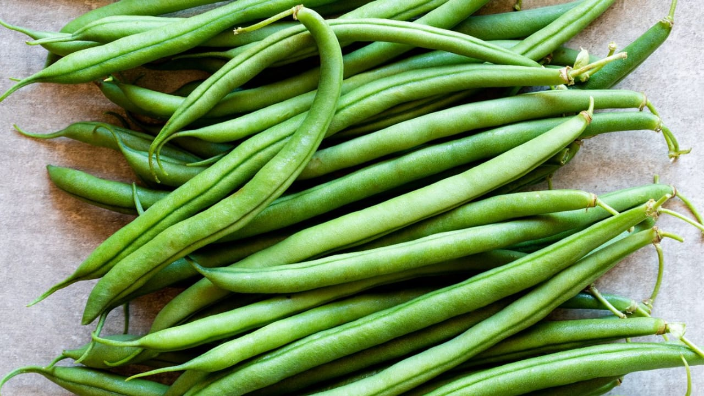
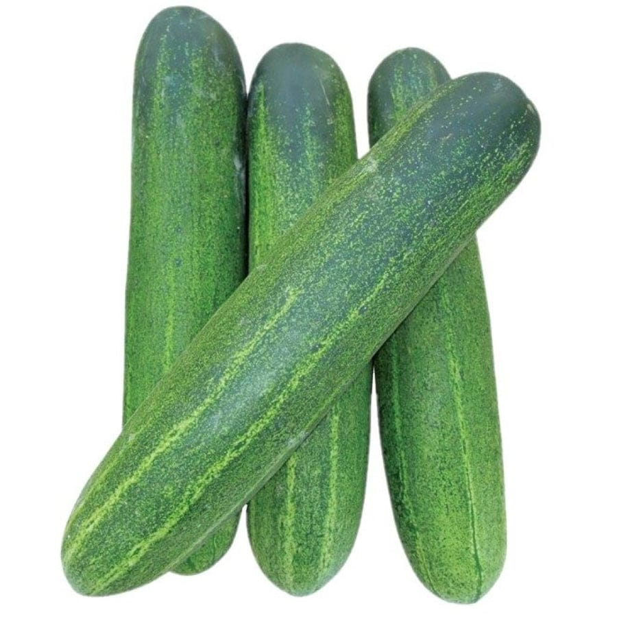
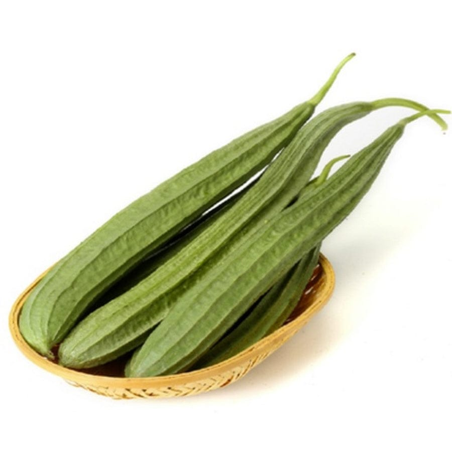
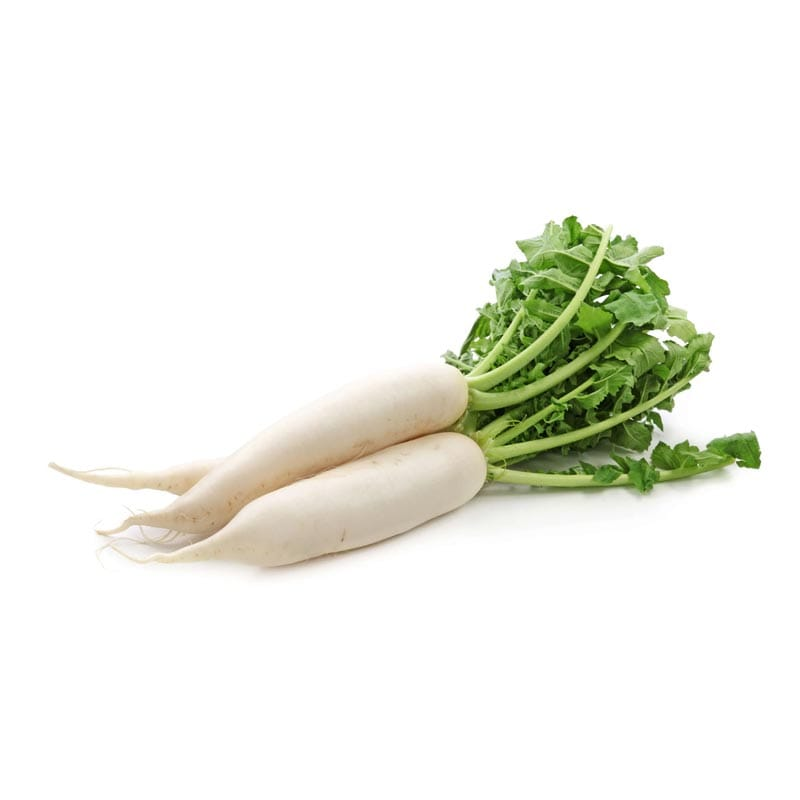
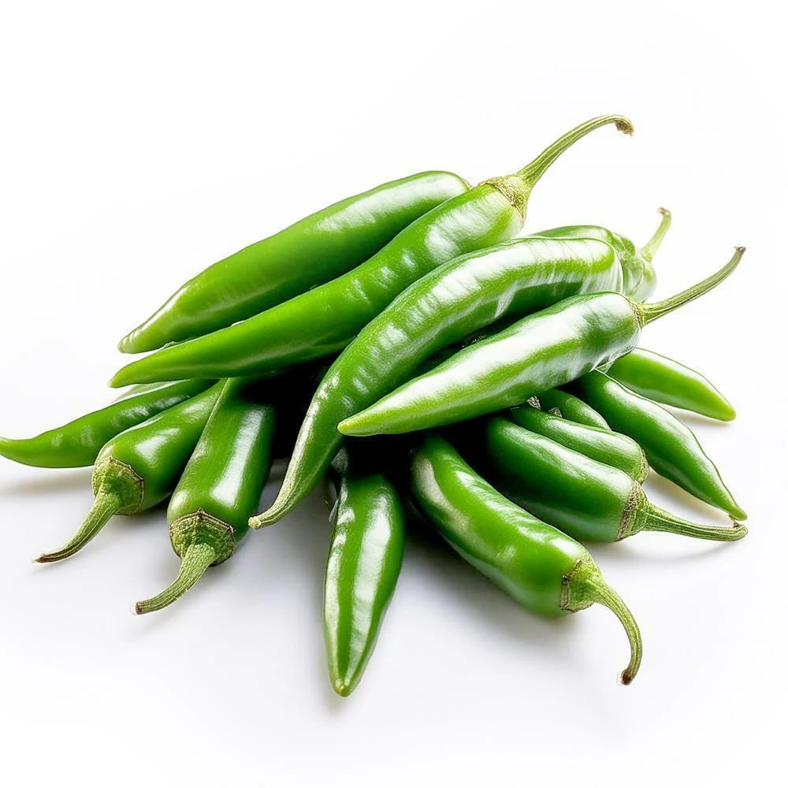
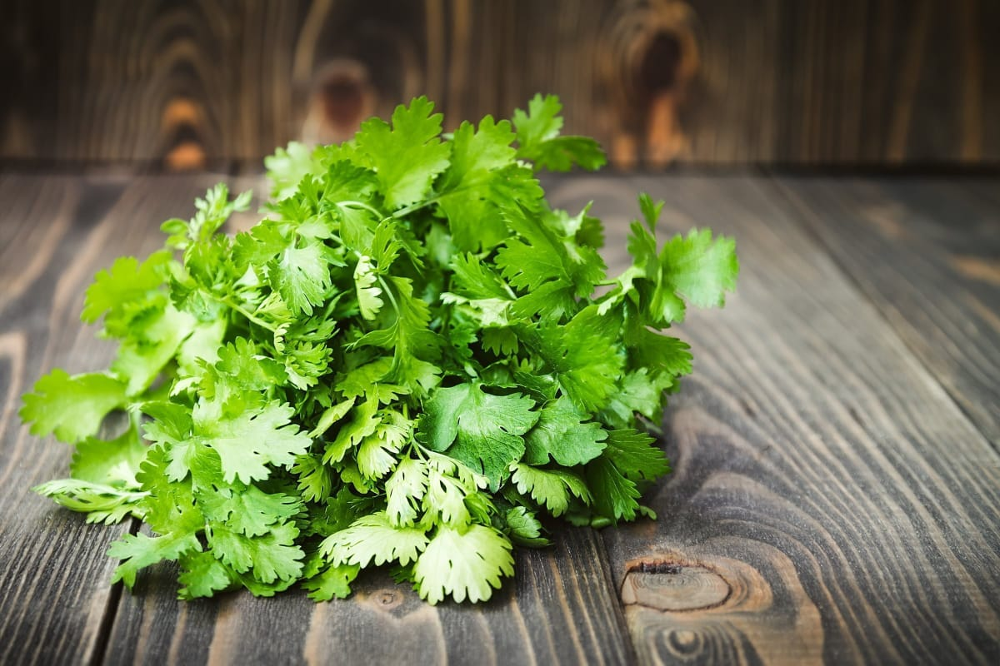
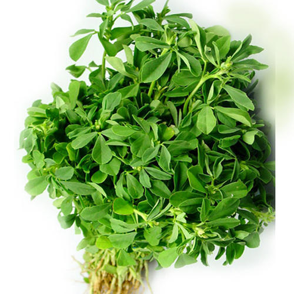
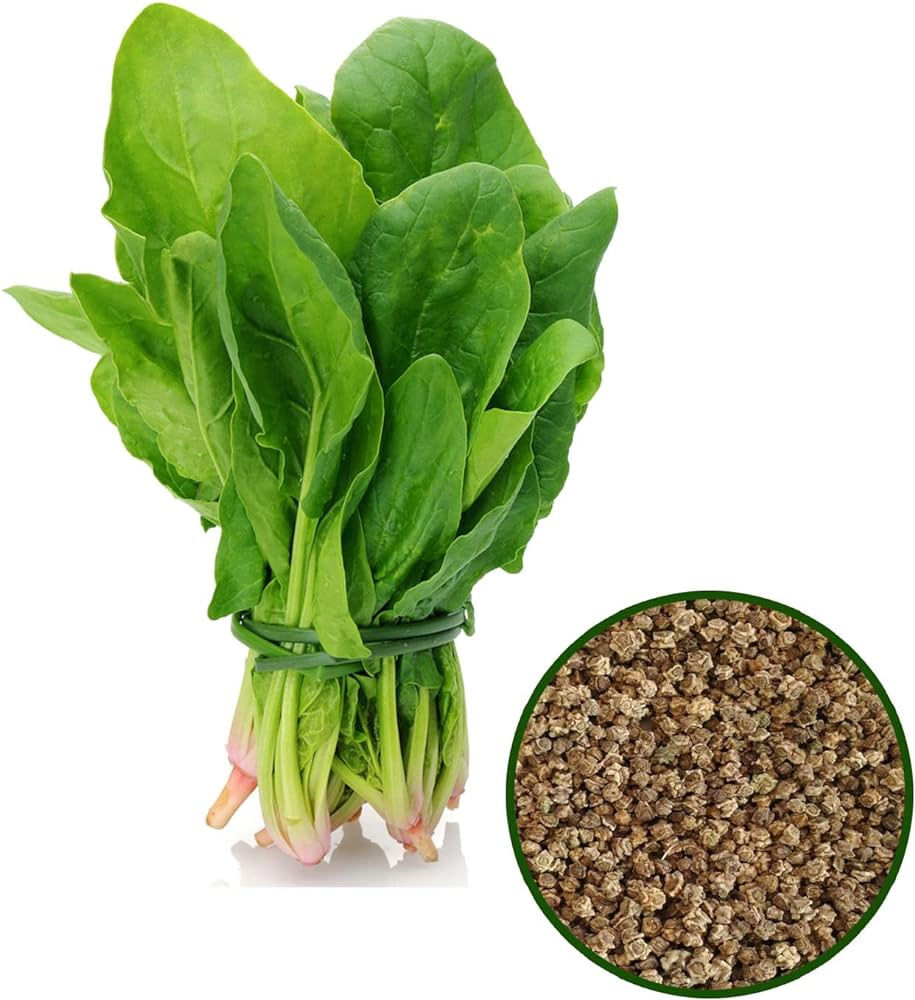
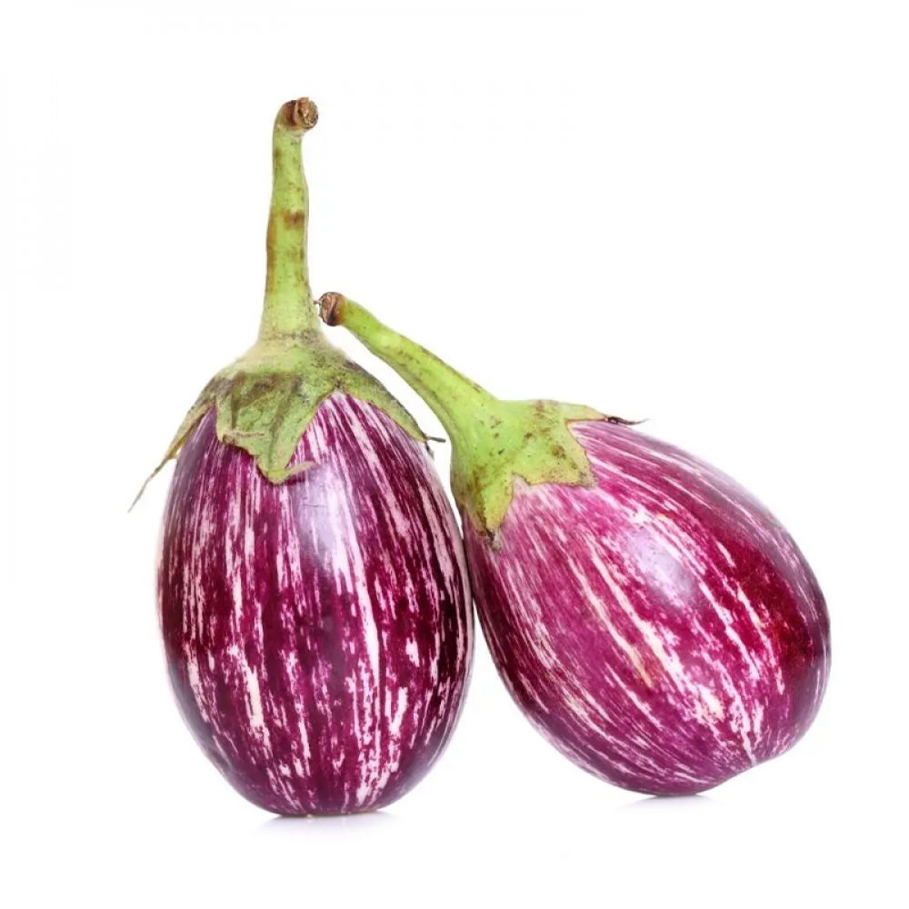

Beans
Grow fresh and healthy beans in your garden with our high-quality seeds.

Cucumber
Get crunchy and refreshing cucumbers by planting our premium seeds.

Ridge Gourd
Plant ridge gourd seeds for a nutritious and delicious addition to your garden.

Radish
Enjoy crisp and spicy radishes by growing our quality seeds.

Green Chilly
Spice up your dishes with fresh green chilies grown from our seeds.

Coriander Leaves
Add a burst of freshness with coriander leaves grown in your garden.

Fenugreek Leaves
Grow fenugreek leaves for their distinct flavor and health benefits.

Palak
Get a steady supply of nutritious palak by planting our seeds.

Brinjal
Grow tender and healthy brinjals with our top-quality seeds.

Tomato
Enjoy juicy and flavorful tomatoes grown from our superior seeds.